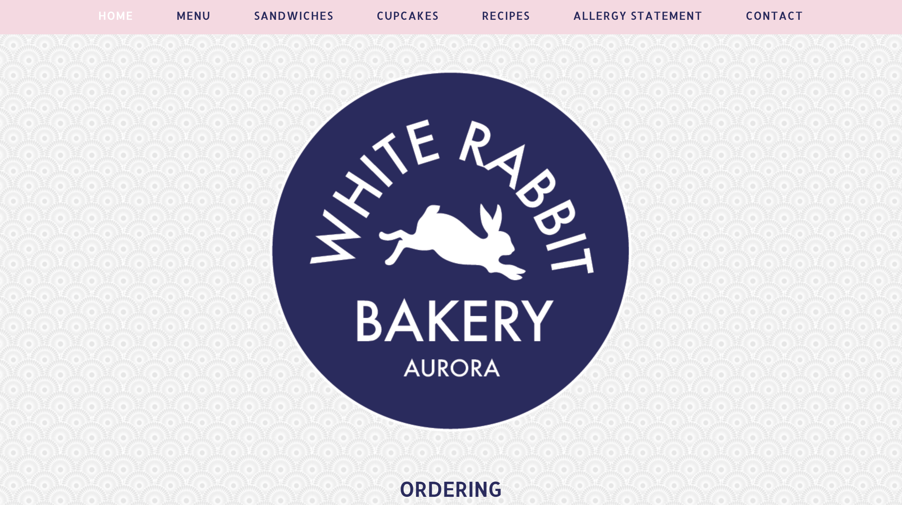
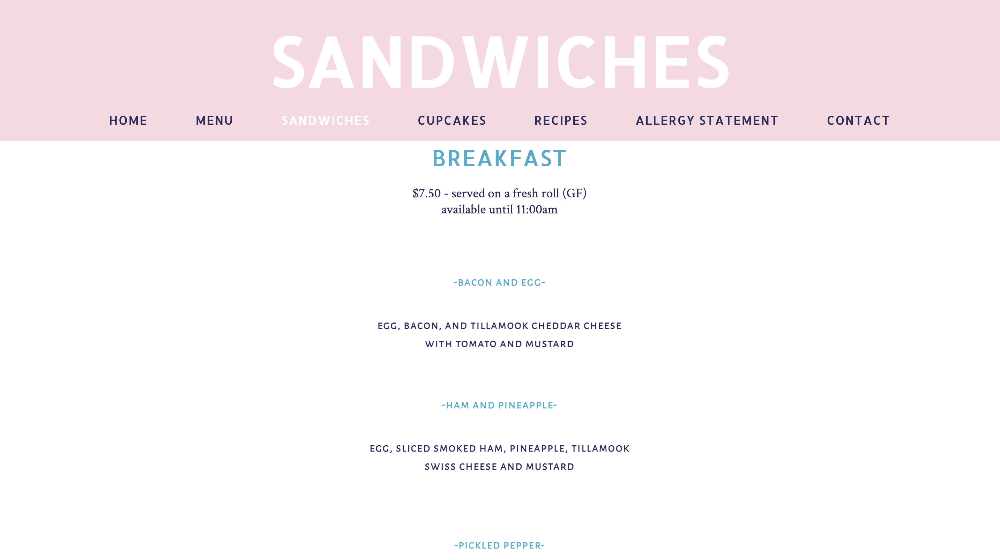
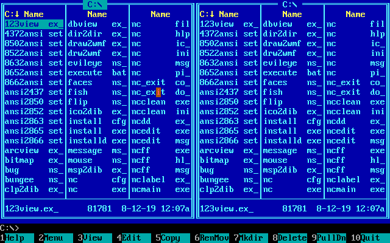
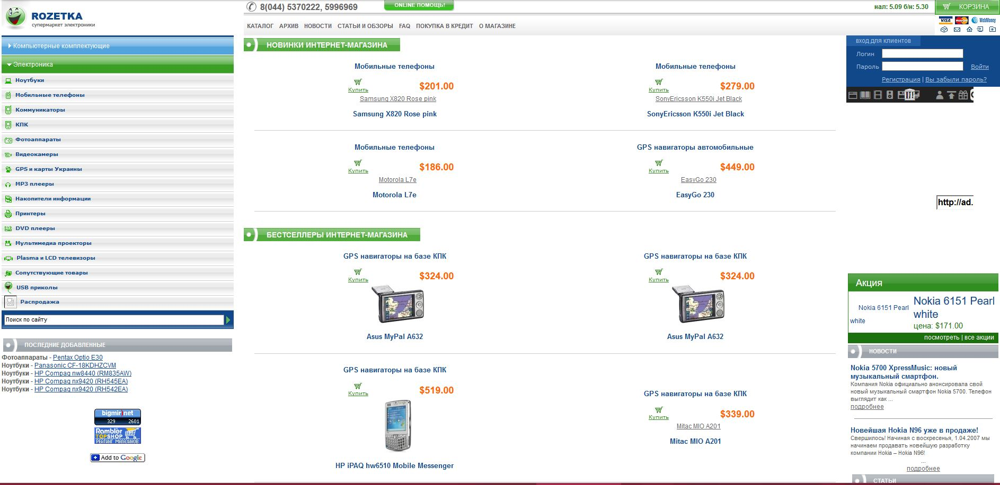
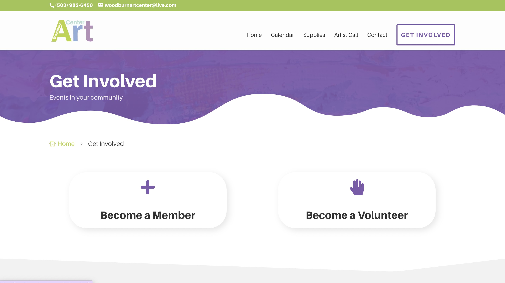
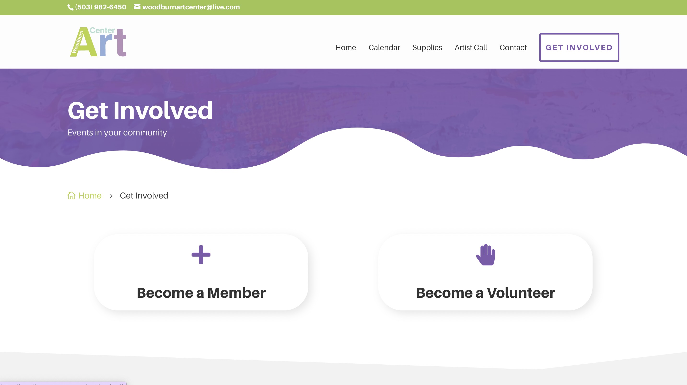

This website is so engaging! Such an interesting representation of the recipe book. What I like the most is that every page has some interactive element other than scrolling. I want to try something like this for my website.
The whole website is very engaging and has so many interesting elements and animations that make you want to read and learn more about the agency. I really like the way the menu/navigation is placed on the page, and of course there's a cool animated effect when you clock on it. One of other really cool things is the hover effect on images. Whenever you hover over them, the image turns into a gif/video, and the cursor rounds the corners of the image into an abstract shape. Plus the cursor face is very cute, and even their favicon is animated! That is so awesome!
I really like some of the elements and navigation of this website. Some of the things I would change is reorganizing the content on the home page. I would include information about the art center, hours, location, and reviews on other pages. I like how the footer looks, so I would like to recreate something similar. Regarding other pages, I would like to do a page for supplies, events, and getting involved. I think that making the overall look of the website more colorful would make it look more lively and welcoming. I believe that cta buttons could look more engaging and recognizable. Also, I would like to experiment with breaking a lot of information into smaller sections. I want to try to use more columns and sidebars.
For this website, I would like to add more content on the home page. I think more photos and features of other sections/pages, such as menus, recipes, and events, would make the page more engaging. Adding the footer with all the necessary information, such as hours, locations, and newsletter sign-up is essential. Ordering info would need some reorganizing, and I think it can even work as a pop-up window. I believe that the menu and recipe layouts need reorganization. I want to create a design highlighting every dish and essential information about it.


Date: 01/31/2023
Old Schoolin' it
Whenever I think of "old thymey" images of websites, for some reason, Norton Commander is the first thing that comes to mind. I remember seeing my dad using this file manager when I was little. And it looks so cool and confusing at the same time. There were so many columns of text, and that blue background made it look even more overwhelming.
Another example I can think of is the website of Rozetka, the biggest online marketplace in Ukraine. E-commerce in Ukraine started developing only in the mid-2000s, so the website looked quite simple at that time. I think we bought our first laptop on Rozetka, and my parents spent hours browsing this website :)


Date: 01/26/2023
Project 1 Idea: Beneficial Insects
I want to make a website for the company selling beneficial bugs. I've worked on a rebranding for this company, and I would like to apply the brand guidelines to this project. I draw inspiration from the scientific illustrations of the insects and a warm and friendly color palette.There are no specific websites I am modeling after. However, I would like to make something similar to the visual storytelling websites, where each page tell a story in different ways as you scroll down.
I really like how engaging and entertaining, and immersive this website is. Smooth scroll animations and symbolic imagery make the narrative of the story so much more enjoyable. In addition, I like how each part of the story is presented in a different yet cohesive way.


 
